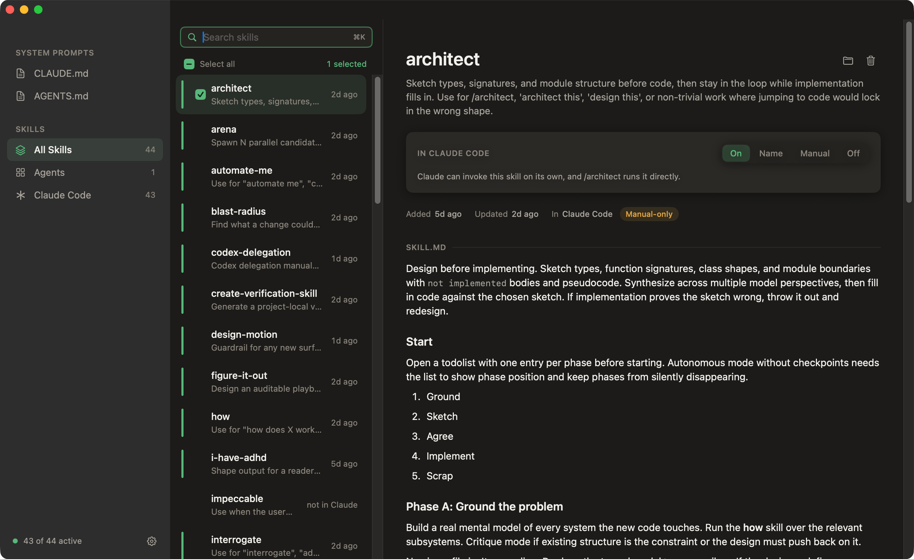
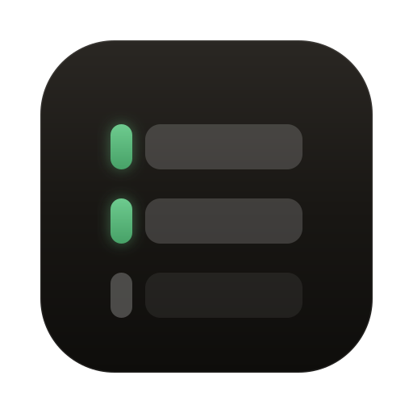

Manage your AI skills.
Skills and system prompts for all your agents, one click away. See what's active in Claude Code, Cursor, and OpenCode, switch anything off, edit your prompts.
Free, MITSigned and notarizedmacOS 14+


Loadout GitHubSkills and system prompts for all your agents, one click away. See what's active in Claude Code, Cursor, and OpenCode, switch anything off, edit your prompts.
Free, MITSigned and notarizedmacOS 14+
